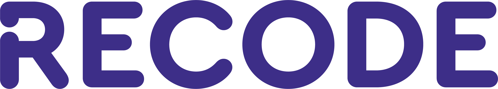

O programa Recode Pro visa a formação e empregabilidade de pessoas de 18 a 39 anos, em situação de maior vulnerabilidade social como programadores full stack.
Além do conteúdo técnico, são desenvolvidos temas como criatividade, comunicação, atuação profissional, e a metodologia proposta se baseia na colaboração e na construção de projetos para a resolução de problemas sociais.
